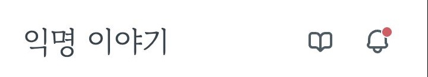

게시글 머리 · 프로필 교환 아이콘 (우리 Figma Line 세트)
- 지금: 팀 링크에서 가져온 그림(사람 카드 둘 + 화살표, 30×24)이라 다른 머리 아이콘보다 가늘고 작아 보여요.
- 후보: 우리 Icons 페이지 Line 세트에서 24 그대로. 뒤로 · 종 · 책과 같은 굵기 · 크기예요. 안 본 받은 요청이면 빨간 점은 그대로.
- X1 users 두 사람 · X2 id-card 프로필 카드 · X3 handshake 악수 · X4 repeat 주고받기 화살표.
후보
X1users · 두 사람
X2id-card · 프로필 카드
X3handshake · 악수
X4repeat · 주고받기
함께 고친 것 · 익명 이야기 머리

적용이용수칙 책을 종과 같은 Line 세트(book-open) · 같은 색으로